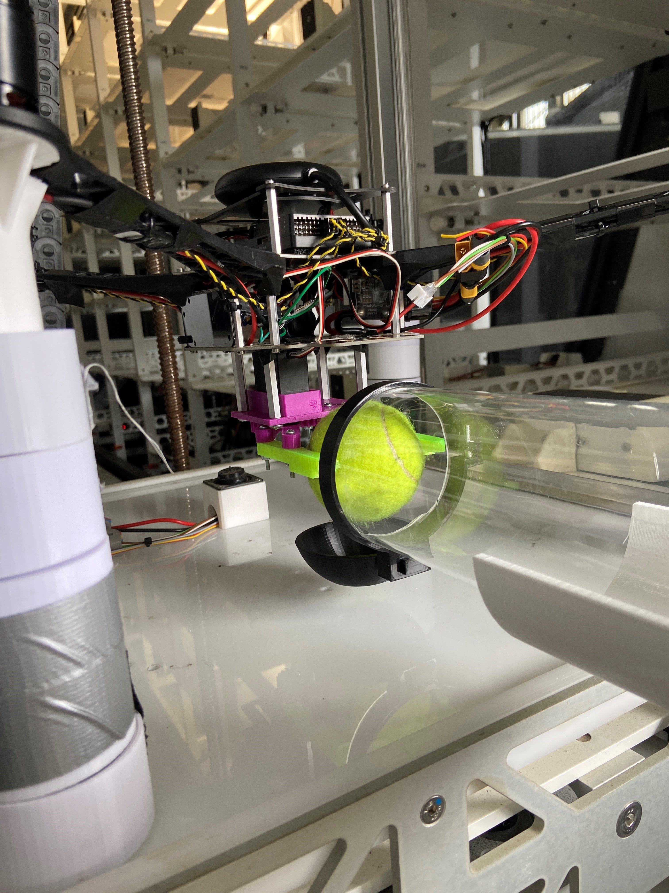
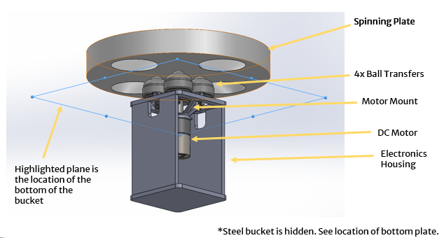
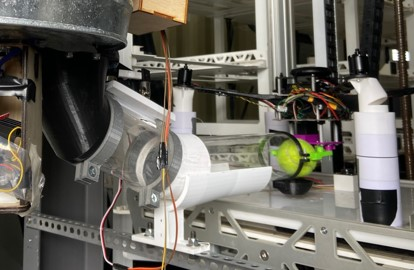
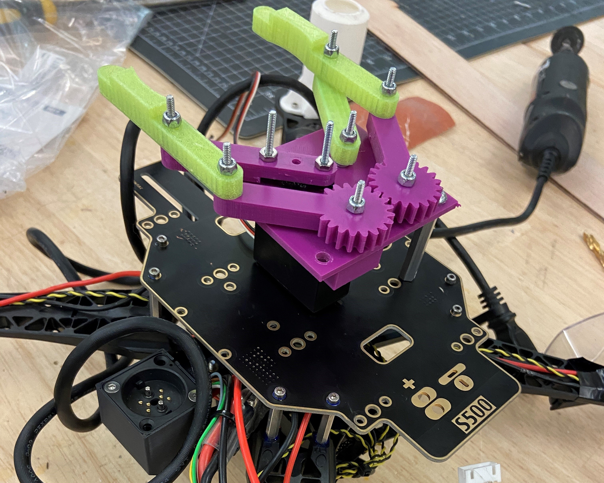
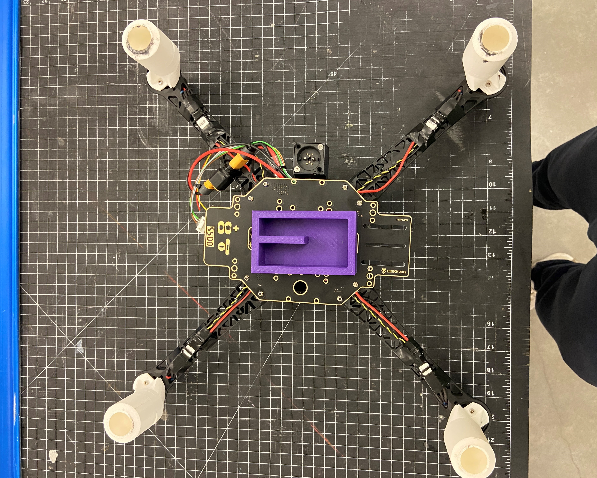
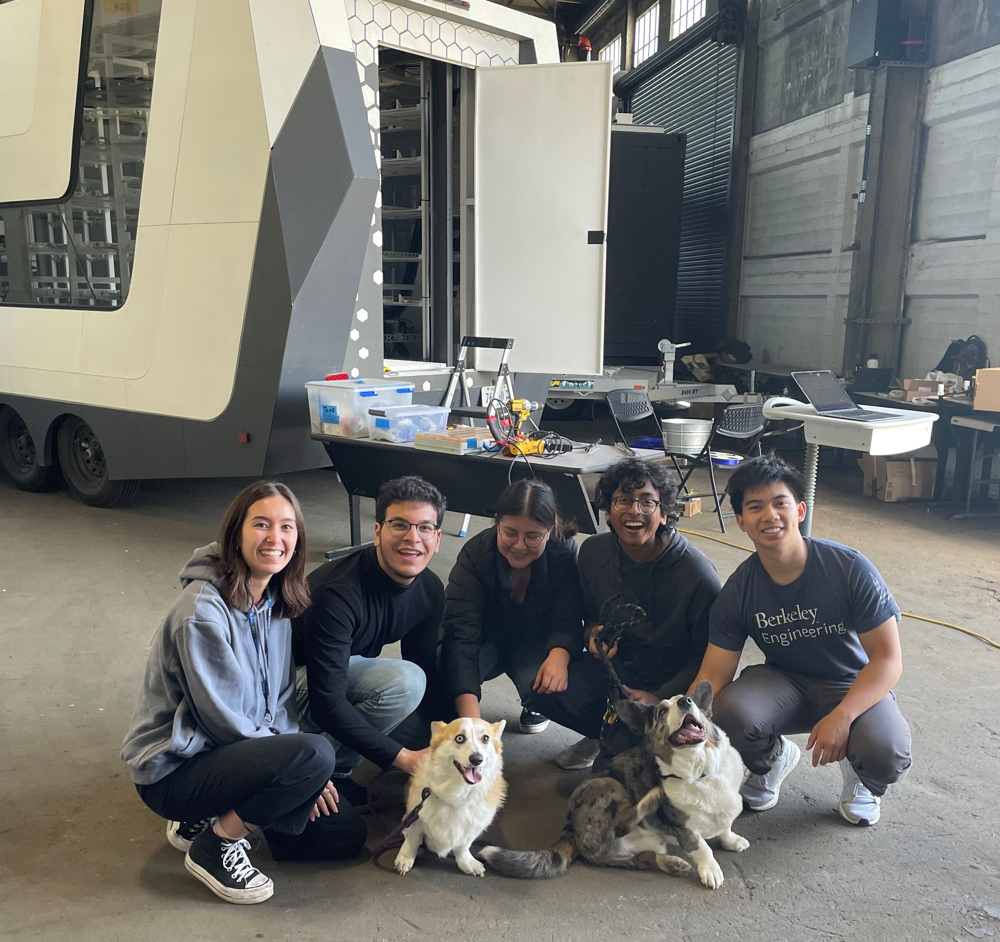
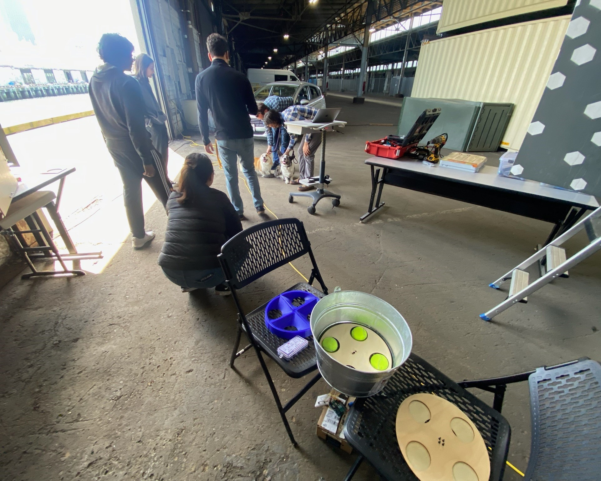

Sentien Robotics - Payload
Startup consulting project for drone payload delivery
Project Overview
Through ESB (Engineering Solutions at Berkeley), I was able to gain a lot of valuable experience working with startups all around the bay. As a student who joined immediately after the club was created, the connections and lessons I learned from these semester-long projects have helped shape many aspects of my career and work thus far. Given a team of 5 engineers, each team is tasked to work with a startup ranging from bio-tech to UAV's, and has 4 months to work on specific projects the company needs. One such startup was Sentien Robotics, an early stage startup creating mobile drone fleet management systems. Their main project was the Hive-XL, a trailer sized vehicle carrying a heterogeneous set of 80 drones to deploy anywhere necessary. By having flight protocols and swarm controls localized to the Hive, Sentien is able to set up work wherever the drone fleet is needed.
Our specific project was based on expanding the capabilities of the hive, moving into payload delivery. My team was tasked with creating an efficient storage and payload indexing system for the Hive, along with designing the end-effector for drones to carry the sorted packages. Given a semester, access to the HiveXL and all its components, we had to prototype and build a proof of concept on how the payload delivery would look on these hive machines. In the first use-case the company wanted to try simple "tennis ball" style packages, a placeholder for fertilizer packages to efficiently plant an entire field!
Image Gallery

Design Overview
The design we ended up going with consisted of 3 main components. The acrylic holding container to which had all our tennis ball packages, an indexing system to load one ball in at a time, and the end-effector attached to the drone allowing for easy pick-up. The hive itself provided a tricky problem for this, as we had to juggle the many protruding geometries of the back of the trailer. Primarily, ensuring that the drones were able to reach the exit point of the container would be the most difficult part, something we based our container design off of. The container was designed with the Hive in mind, allowing for easy removability while still being fully supported by the trailer. Under, the indexing system was inspired by a skee-ball mechanism, utilizing simple servo control to ensure a single ball was deployed each time. The 3rd (and arguably coolest) mechanism was the end-effector, and all the wireless communication that came with it. This was my part of the project, as we split up work early in the semester to ensure all aspects that the company wanted would be delivered.


Gripper
The gripper is the main mechanism that would interface the existing drones with our system. As a proof of concept for the project, Sentien asked that we create enough for one drone, but design so it is interfaceable with any of them. When designing the gripper, there are a few main things I considered to ensure a smooth interface.
- Wireless communication
- Balanced center of mass
- Low mass to allow drone to fly
- Interface with drone's communication system
- Easily interchangeable grippers for the future
Overall, the gripper was powered by a servo motor and a linkage system, translating rotational movement into translational. This allowed the gripper to close in on the payload, while keeping the design low-weight. To actually power the servo, I realized that the drone had extra PWM channels, so simply sending a signal through the drone would simplify the functionality. The drone also had onboard 5V, so the servo aspect was complete. In terms of Bluetooth communication, I used an HC-05 module to communicate with my computer, as to when to actually send in the PWM signal to open or close the gripper. Later on, this was automated so that whenever the payload was deployed, the gripper would automatically receive a wireless signal and close. My first design was very bulky, and enclosed many electronics in a box. After several design changes, I realized that it would be more efficient to house the electronics in the drone itself, simplifying packaging significantly.


Final Presentation
After a lot of visits to Sentien's HQ throughout the semester, we finally got ready to present our final deliverable. This included a live demo with the CEO and lead mechatronics engineer, along with the presentation attached below.
Conclusion/Next Steps
Overall, this was one of my first college team engineering projects, and I am very happy to have been paired with a group of engineers with a diverse set of skills. Normally, our projects only last a semester, but Sentien Robotics enjoyed our work enough to hire 2 project teams the following semester! By working on a real world problem that a company might face/want to expand into, I was able to gain knowledge on how a project workflow should be maintained and also gain a cool project to add to my portfolio! If I could go back and visit, I would make certain design changes to our overall system. The next step I would look at is to use the same communication protocol the drone uses to fleet control for the gripper. Currently, there is an extra PCB module which allows me for serial communication. But, it would be more efficient to use the existing wireless communication to actuate the gripper.
Screenshots / Media

